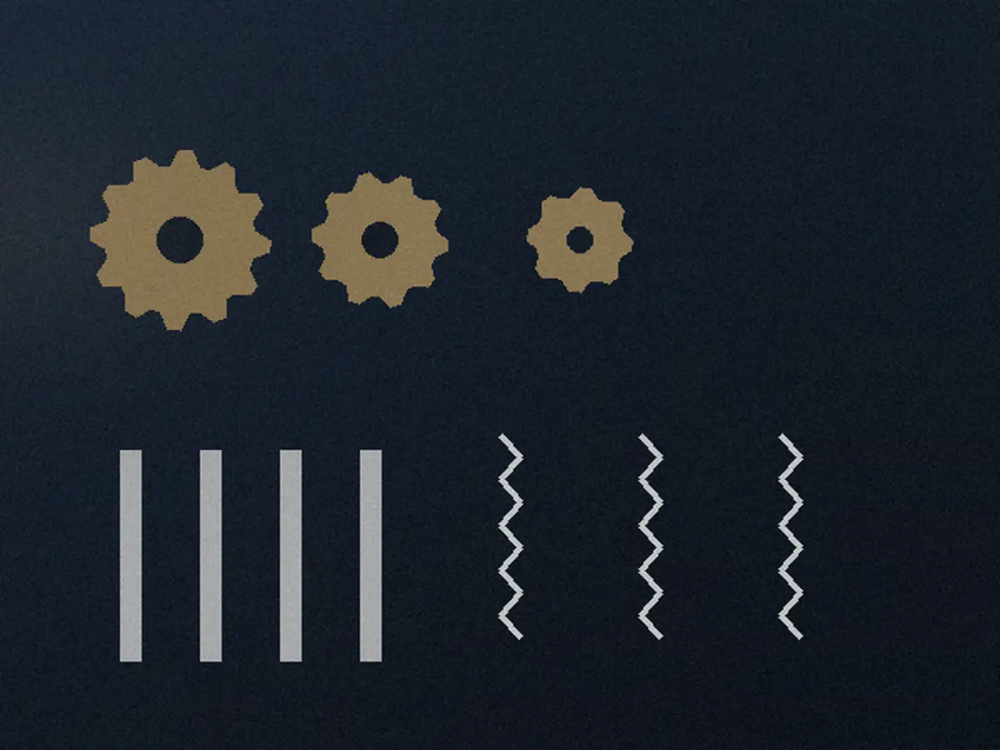
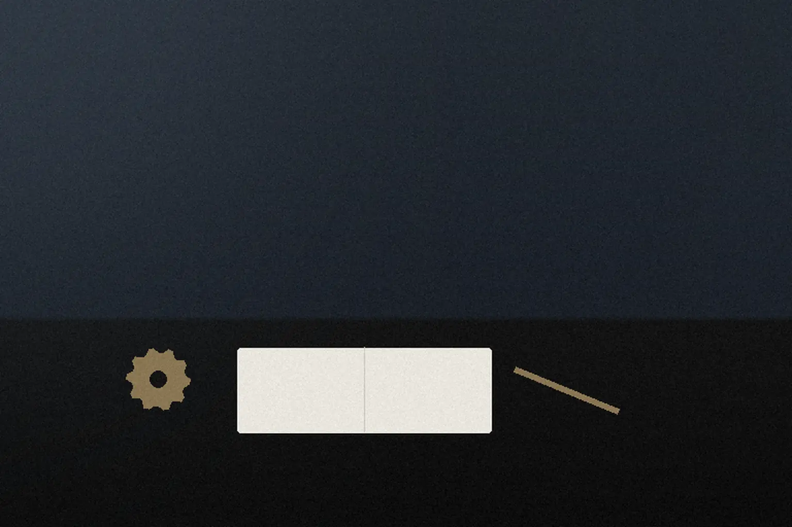
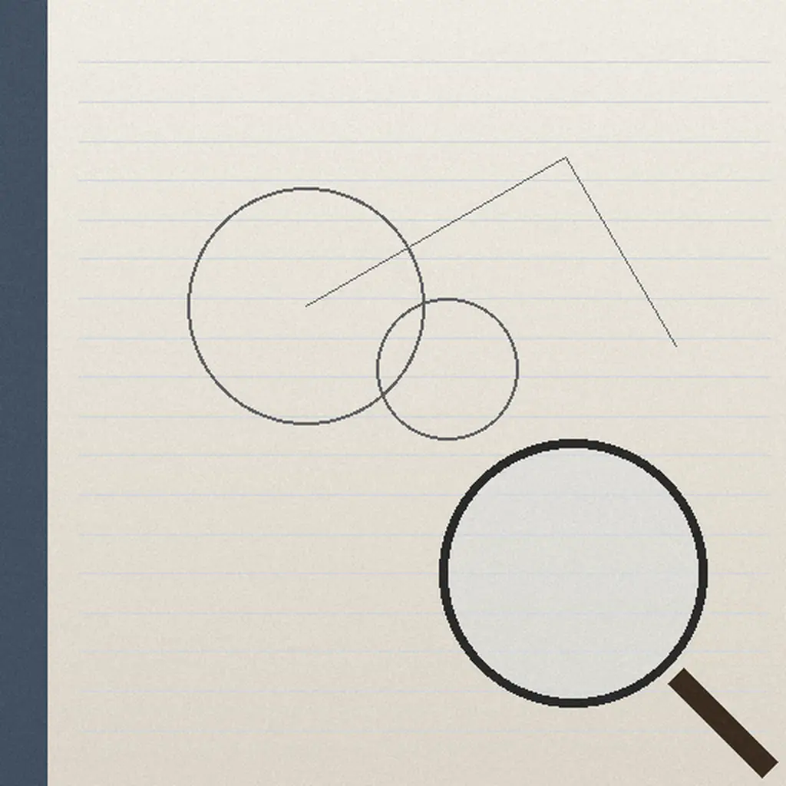

No.1
申し込みから出願の準備まで、
五つの石を順に。
五つの石を順に。
出すかどうかは、見立ての書面を読んでから決めていただけます。どの石の前でも、そこでやめられます。

1申し込み
フォームか電話で。製品の分野と、相談したいことを数行。あなた
2秘密保持の書面
しくみの話を始める前に、書面を交わします。事務所と、あなた
3初回相談
試作品を見ながら、特許・意匠・商標のどれで守るかを一緒に考えます。弁理士
4見立ての書面
似た権利の簡単な下調べと、守り方の候補を書面で。下調べの費用の扱いは【要確認】。権利が取れるかどうかを約束するものではありません。弁理士
5見積もりと準備
出すと決めてから、見積もりを書面で出し、明細書と図面を作り始めます。事務所

No.2
机に置いていただくのは、
この四つです。
- 1スケッチか試作品動かない試作や、ノートのラフでもかまいません。
- 2発表・販売の予定日展示会や販売の予定。先に公開すると、原則として特許が取りにくくなります。
- 3似た製品の心当たり知っている範囲で。調べるのは事務所で行います。
- 4名前の候補商標も考えるときだけ。決まっていなくてもかまいません。
発表の日が近いときは、申し込みの欄にその日付をお書きください。順番を調整します【要確認】。
No.3
話を始める前に、
秘密を守る書面を交わします。
- 扱いの範囲申し込みの段階から、内容は秘密として扱います
- 相談の部屋外から見えない個室。試作品は机の上だけで扱います
- 預かった資料相談のあとの返し方と保管の期間は【要確認】
書面の見本
秘密保持に関する覚書
相談者と、ふみいし特許事務所は、相談で開示される技術の情報について、次のとおり取り決める。
第1条秘密情報の範囲
第2条目的外の使用の禁止
相談者ふみいし特許事務所
No.4
相談の申し込み
しくみの詳しい中身は、まだ書かないでください。分野と相談したいことだけで十分です。
| 特許 | 330,000円から |
|---|---|
| 意匠 | 110,000円から |
| 商標 | 55,000円から |
特許庁の費用は別です。内訳は費用の表に。
出願の費用の内訳を、